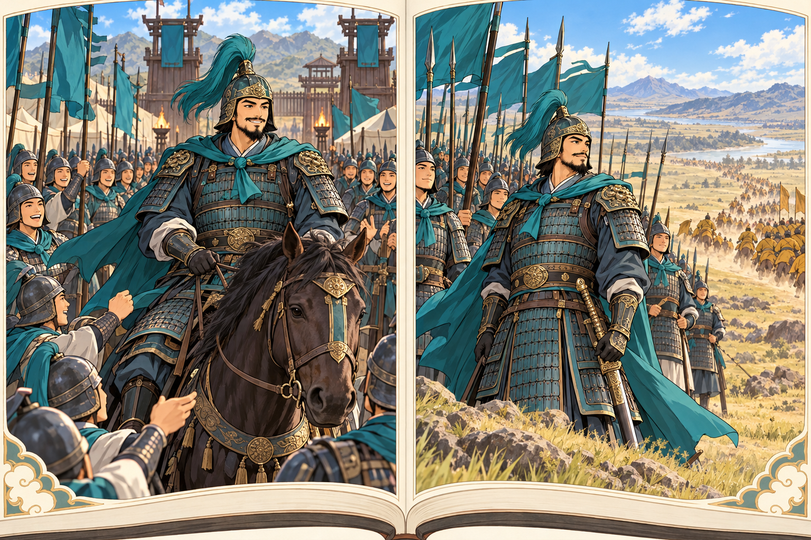
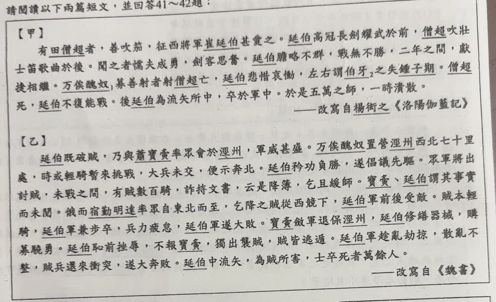
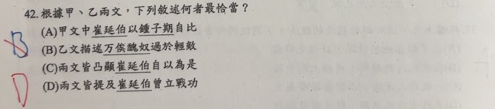

分享原卷｜第 42 題
完整原題
作答所需文章／材料
【甲】 有田僧超者，善吹笳，征西將軍崔延伯甚愛之。延伯高冠長劍耀武於前，僧超吹壯士音哀曲於後。聞之者懦夫成勇，劍客思奮。延伯膽略不群，戰無不勝，二年之間，獻捷相繼。萬俟醜奴，募善射者射僧超亡，延伯悲惜哀慟，左右謂伯牙之失鍾子期。僧超死，延伯不復能戰。後延伯為流矢所中，卒於軍中。於是五萬之師，一時潰散。 （改寫自楊衒之《洛陽伽藍記》） 【乙】 延伯既破賊，乃與蕭寶夤率眾會於涇州，軍威甚盛。萬俟醜奴置營涇州西北七十里處，時或輕騎暫來挑戰，大兵未交，便示奔北。延伯矜功負勝，遂倡議先驅。眾軍將出討賊，未戰之間，有賊數百騎，詐持文書，云是降簿，乞且緩師。寶夤、延伯謂其事實而未閱。俄而宿勤明達率眾自東北而至，乞降之賊從西競下，延伯軍前後受敵。賊本輕騎，延伯軍兼步卒，兵力疲怠，延伯軍遂大敗。寶夤斂軍退保涇州，延伯修繕器械，購募驍勇。延伯恥前挫辱，不報寶夤，獨出襲賊，賊皆逃遁。延伯軍趁亂劫掠，散亂不整，賊兵還來衝突，遂大奔敗。延伯中流矢，為賊所害，士卒死者萬餘人。 （改寫自《魏書》） 字詞提示（依原卷註釋整理）：萬俟醜奴，北魏時期軍事領袖；萬俟為複姓，讀ㄇㄛˋ ㄑㄧˊ。伯牙，春秋時善鼓琴者，與鍾子期為至交。根據甲、乙兩文，下列敘述何者最恰當？
(A) 甲文中崔延伯以鍾子期自比
(B) 乙文描述萬俟醜奴過於輕敵
(C) 兩文皆凸顯崔延伯自以為是
(D) 兩文皆提及崔延伯曾立戰功
先想一想，再查看答案、解說與原圖
原卷作答：B（紅筆訂正D）
正確答案：D。甲有戰無不勝、獻捷相繼，乙開頭有延伯既破賊；兩篇皆有曾立戰功的明確依據。
逐項解析
| 選項與原句 | 判讀 | 句意與判斷理由 |
|---|---|---|
| (A) 甲文中崔延伯以鍾子期自比 | 不選 | 甲說左右謂伯牙之失鍾子期，發言者是身邊的人，不是崔延伯自比；崔延伯對應伯牙，田僧超對應鍾子期。 |
| (B) 乙文描述萬俟醜奴過於輕敵 | 不選 | 矜功負勝的主詞是延伯，不能把自恃戰功的特點移給萬俟醜奴。 |
| (C) 兩文皆凸顯崔延伯自以為是 | 不選 | 乙有崔延伯恃勝與擅自行動的描述，但甲主要寫田僧超的鼓舞及死後影響，不能說兩篇皆如此。 |
| (D) 兩文皆提及崔延伯曾立戰功 | 應選 | 甲有戰無不勝、獻捷相繼，乙開頭有延伯既破賊；兩篇皆有曾立戰功的明確依據。 |
詳細說明與解題步驟
題目問甲、乙「兩文」都支持什麼，必須兩篇各找證據，不能只憑其中一篇的內容作答。甲說「戰無不勝，二年之間，獻捷相繼」；乙開頭說「延伯既破賊」，既是已經，破賊是打敗敵軍。兩邊都提到崔延伯曾經獲勝立功，故選D。
A同時換錯說話的人與比喻角色：原文是左右的人形容，不是崔延伯自比；失去田僧超的崔延伯對應失去知音的伯牙，田僧超才對應鍾子期。
B讀矜功負勝時，必須確認前面的主詞延伯，不能移到敵方萬俟醜奴。C則把乙文的個性描寫，擴大成兩文共同重點，與甲的敘述不符。
解說圖以兩個勝利情境表示「兩文皆曾寫戰功」，只是閱讀記憶示意，不代表兩篇原文記載了圖中特定的凱旋、服飾或戰場場面。

核對註記：已核對題幹、全部選項與必要材料；教材對應課次未確認，歸綜合。
原圖（僅本題）

